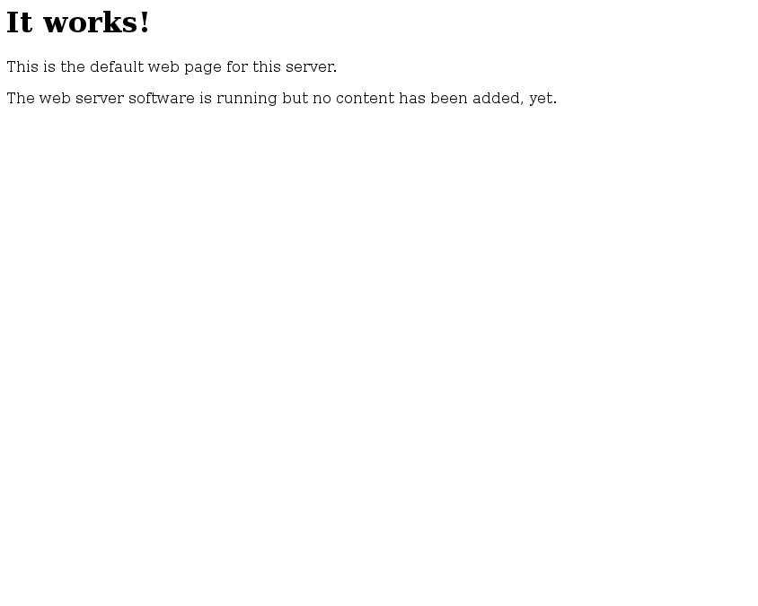
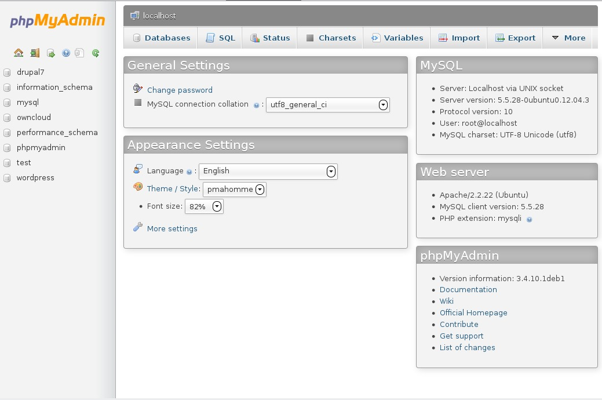

Apache is a free web server daemon that will enable you to host a wide array of websites, from simple landing pages for your contact information and resumé, to large e-commerce sites or content platforms. Together with MySQL database management, PHP scripting, and - of course - Linux, the "LAMP" stack is a popular starting base for running a wide variety of web applications and platforms.
We will start our web hosts' configuration with Apache. Apache's versatility is one of its best assets. It supports a range of modules that can be added on to expand its usability for different services or applications. New sites can be set up very easily, with the quick creation of VirtualHost file you can be up and running in seconds. As a result this may be one of the shortest guides on the site!
On our Ubuntu server, Apache was most likely installed by default when we chose to install our LAMP server. If for some reason you have no files under /etc/apache2, you can install Apache by running:
sudo apt-get install apache2
Once Apache is installed, make sure it is running with sudo service apache2 restart. You will be greeted with the following lovely message if you navigate your web browser to the IP address of your server:

At this point you have a very basic web server. If you know HTML, you can create pages and place them in your default web directory, /var/www, and they will show up when you navigate to your domain name or IP address.
To create separate sites on different subdomains or for different services, you can create VirtualHost files to manage them. It will also allow you to activate or deactivate these sites in a modular way if you need to do some debugging. VirtualHost files are stored in /etc/apache2/sites-available. They can be enabled with sudo a2ensite $sitename and disabled with sudo a2dissite $sitename.
This is a sample format for a VirtualHost file:
DocumentRoot /www/example1
ServerName example.com
ServerAlias www.example.com
# Other directives here
DocumentRoot is the physical location on your server that has the HTML/PHP/whatever files to be served. ServerName is one of your domains, but it can also have a subdomain attached. For example, if you wanted to host a site only to be seen at http://secretsite.mydomain.com, you could put "secretsite.mydomain.com" as your ServerName. ServerAlias makes a site available on more than one domain or subdomain. There are plenty of other parameters for VirtualHost files that you can use. See an intro to some of them at Apache's documentation site.
While we can now set up websites via Apache with no problem, it's most likely that you will want to use another platform to manage your content, such as Wordpress or Drupal. These will allow you to automatically add blogs, photo galleries and other content to your site via a clean interface and no coding required. For those, we will need to assemble the next components of our LAMP stack.
PHP is easy to install in Apache. To do so, run:
sudo a2enmod php
then restart Apache:
sudo service apache2 restart
With that, your Apache server will be able to parse and serve PHP files as normal.
Next, we can get to setting up our databases. There are many different database systems out there, this guide can't possibly cover them all. However, MySQL is the database system that is most frequently used for popular web applications and platforms. Both Wordpress and Drupal use MySQL. MySQL should have been installed with our Ubuntu Server, but if not you can install it with:
sudo apt-get install mysql-server
During the installation, you will be given the opportunity to set a root password for the MySQL user. Set this to something secure but accessible, as we will need it later to configure our database.
We will now install phpMyAdmin, which is a visual front-end to MySQL and will allow us to easily set up databases for our web apps. Run the following:
sudo apt-get install phpmyadmin
It will ask you what server to use. Choose Apache, as that is what we are using as a web server.
Next, head to http://$your-ip-address/phpmyadmin and we will continue our configuration from there. Log in using "root" as the username, and the root password we chose earlier. You will be greeted with a similar landing page:

From here you will be able to add new databases and users as necessary. In brief:
Now that we know the basic ins and outs of our MySQL setup, we are ready to install a web application for our new server. You can choose any platform you like based on your needs and what you actually want to do with your server. As an example case, we will go through the installation of WordPress, a simple and easy-to-use blogging platform.
WordPress, the wildly popular and effortless blogging platform, is available for installation in the Ubuntu repositories. However, the versions that are usually carried in distribution repositories are often out-of-date by at least a few versions. In order to have the most secure and cutting-edge experience, we will download the source from WordPress directly, then install it to our webserver.
Unzip the install package to a folder of your choosing under /var/www. If you want the blog to be at the base of your webserver, such as http://mydomain.com with no subdomains or subfolders required, it is OK to unzip the package to the base /var/www directory.
After unzipping, you will need to set up a MySQL database and user that your WordPress installation can use. Go to http://mydomain.com/phpmyadmin, login with your root credentials, and set up a database using the instructions found in 3.8.2. The database can be named anything but usually just "wordpress" suffices. After that, set up a user (named anything, but "wp" seems to be a default). The user should have access to the new "wordpress" database.
Now we are ready for WordPress' "Famous Five-Minute Install." It might even take less time than that! Open up your web browser and go to http://mydomain.com/wp-admin/install.php and follow the on-screen instructions. If you installed your WordPress files to a different location, head there, but make sure you append /wp-admin/install.php to the end. It couldn't be more simple to get up and running.
From there, you can customize the themes and modules of your WordPress install to your hearts' content. If you'd like more information on what you can do with WordPress, head to its website.
This step is also optional but it is highly recommended, especially for any sites that will require logins or access to potentially sensitive information.
SSL is a method for web browsers to encrypt connection data between the client (your computer) and the source (the server you're trying to access). SSL can be found in use all over the web, nearly anywhere you need to login with something. Any address reachable or shown as "HTTPS" indicates a site that is compatible with SSL. From a privacy and security standpoint, it is a best practice to use SSL wherever possible.
Perhaps the most substantial barrier to the adoption of SSL security to websites is the trust relationship it requires of your site. Currently, one can reap the secure benefits of SSL by using default "SSL certificates" that one can generate themselves on their server. However, in order to have an SSL certificate that provides trust -- trust that your web server is who it says it is -- an SSL certificate must come from an external source called a Certificate Authority. 99% of the time, these certificate authorities charge for SSL certificates, often an arm and a leg. If you end up using a self-generated certificate instead, browsers will pop up with messages like "Untrusted SSL Certificate" and advise that you not proceed. This is obviously not an ideal system but it is the one we are stuck with at the moment.
The summary of this story is that SSL is very important if you are going to be doing any logging-in or exchanges of sensitive information via your web server. Self-generated SSL certificates are just fine for personal use, as you can easily bypass the Untrusted SSL Certificate messages yourself and still be able to use the encryption features it provides. However, if you plan on offering any services whatsoever to other people, such as shared email hosting for your organization or a cloud platform for your family, it is advised that you purchase an SSL certificate for use in your website.
Whether you are looking for a self-signed certifiate OR looking to purchase one for general service, you will need to generate a Certificate Signing Request (CSR). This is a file that will contain all the data a Certificate Authority needs to create our personalized certificate. First, we have to create a private key for our server to generate these requests with.
Note that if you already have a private key on your server for certificate requests or generation (generated for Postfix, for example) then you do not need to create another.
openssl genrsa -des3 -out server.key 1024
Make sure you save this file in a very safe location, as you should keep it for future certificate requests.
Now comes the time for our Certificate Signing Request:
openssl req -new -key server.key -out server.csr
OpenSSL will ask you several questions at this point, which should be tailored to your situation. These questions will include:
Country Name (2 letter code) [GB]:
State or Province Name (full name) [Berkshire]:
Locality Name (eg, city) [Newbury]:
Organization Name (eg, company) [My Company Ltd]:
Organizational Unit Name (eg, section) []:
Common Name (eg, your name or your server's hostname) []:
Email Address []:
Please enter the following 'extra' attributes
to be sent with your certificate request
A challenge password []:
An optional company name []:
You will need to set the "Common Name" as the fully-qualified name of the domain you wish to secure. If you wish to secure the base of your website located at http://mydomain.com, you can simply enter "mydomain.com." However if you want to secure a subdomain like myblog.mydomain.com, you would need to enter "myblog.mydomain.com" here. You will need different certificates for different subdomains in the majority of cases. If you are obtaining a wildcard certificate (and you know what that is), you can enter "*.mydomain.com" here.
Once you've answered the above questions, your CSR will be generated. At this point, you can either self-sign it for your own use, or you can send it to a Certificate Authority to purchase a certificate.
With your server key and CSR in hand, run the following to generate a certificate. It's generally a good idea to set a time limit on them and renew them after a certain period. This command will set it to expire after one year.
openssl x509 -req -days 365 -in server.csr -signkey server.key -out server.crt
And that's it! You can now dispose of the CSR file, but keep the CRT and the KEY in very safe places. We will use these two files in our Apache installation.
To purchase a valid SSL certificate that is signed by a Certificate Authority like Thawte, Verisign or Comodo, you can go online and provide them with your generated CSR. A good place to do this is on NameCheap.
Choose the SSL certificate that meets your needs, then purchase it. You will be forwarded to a page where you can upload your CSR file and input some information. After a time, you will receive instructions on how to receive your certificate, based on the type of certificate you ordered and the company that is providing it.
Once you have your key and CRT files in hand, you are ready to install them in Apache. This must be done in a special VirtualHost file for your SSL-enabled host. Copy your default host file in /etc/apache2/sites-available, and name it something like $name-ssl. See the example below for the required lines:
DocumentRoot /www/example1
ServerName example.com
ServerAlias www.example.com
SSLEngine On
SSLCertificateFile /path/to/certificate/file.crt
SSLCertificateKeyFile /path/to/certificate/keyfile.key
SSLCertificateChainFile /path/to/certificate/chainfile
Also, don't forget to enable the Apache ssl module by running:
sudo a2enmod ssl
Once this is done, enable any new VirtualHost files you created via sudo a2ensite $name-ssl and reload your configuration with sudo service apache2 reload. Fire up your browser of choice and head to https://mydomain.com and enjoy your encrypted connection!